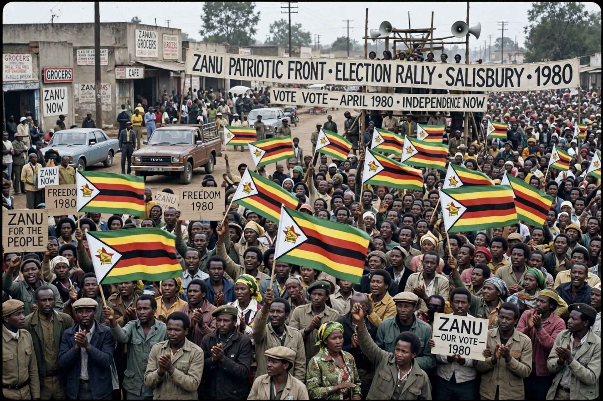

The Zimbabwe African National Union (ZANU) was a political and military organisation in Southern Rhodesia (later Zimbabwe) that fought against the minority white government of Ian Smith during the Rhodesian Bush War. Founded in 1963 by dissidents from Joshua Nkomo's ZAPU, ZANU's armed wing, ZANLA, waged a guerrilla war from bases in Mozambique. ZANU won the 1980 elections and, under Robert Mugabe, governed Zimbabwe from independence; in 1988 it merged with ZAPU to form ZANU–PF, which remains the ruling party.
| Zimbabwe African National Union | |
|---|---|
 ZANU supporters waving flags at an election rally in Salisbury, 1980 ZANU supporters, 1980 | |
| Founded | 8 August 1963, Salisbury |
| Split from | ZAPU |
| Founders | Ndabaningi Sithole, Herbert Chitepo, Robert Mugabe, Edgar Tekere |
| Armed wing | Zimbabwe African National Liberation Army (ZANLA) |
| Ideology | African nationalism, Marxism-Leninism (in exile period) |
| Merged into | ZANU–PF (1988) |
ZANU was founded in 1963 in Salisbury (Harare) by the Reverend Ndabaningi Sithole, journalist Leopold Takawira, lawyer Herbert Chitepo, teacher Robert Mugabe, and others who broke from Joshua Nkomo's Zimbabwe African People's Union, accusing Nkomo of indecisive leadership. Chitepo became chairman, Sithole president, and Mugabe secretary-general. After ZANU was banned by the Rhodesian government in 1964, its leadership operated in exile from Zambia and later Mozambique, aligned with Maoist China and the Frontline States.
The armed struggle intensified in the 1970s. The assassination of Herbert Chitepo in Lusaka in March 1975 triggered arrests of ZANLA commanders by Zambia and a crisis in the movement; Mugabe, released from Rhodesian detention, crossed into Mozambique in 1975 and consolidated control of ZANU and ZANLA by 1977. With FRELIMO's victory in Mozambique, ZANLA infiltrated eastern Rhodesia en masse, and by 1979 the guerrillas operated in most of the country. The Lancaster House Agreement of December 1979 ended the war and provided for majority-rule elections.
ZANU won 57 of the 80 black seats in the February 1980 elections; Mugabe became prime minister of the newly renamed Zimbabwe on 18 April 1980. Tension with ZAPU soon erupted over arms caches and political rivalry and escalated into the Gukurahundi campaign in Matabeleland (1983–87). The 1987 Unity Accord ended the conflict, and in 1988 ZAPU was absorbed into the renamed ZANU–PF (Patriotic Front), which has governed Zimbabwe ever since.
Categories: Political parties in Zimbabwe · Rhodesian Bush War · Liberation movements